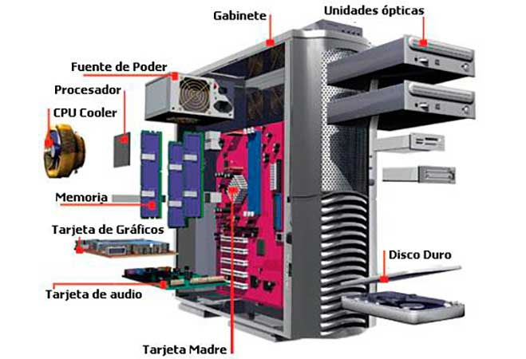
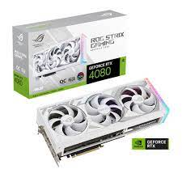

Bienvenido al Curso de Informatica sobre Componentes de la PC
En este curso aprenderas sobre los componentes de una PC, ademas de su funcion dentro de tu equipo.
Introducción
- ¿Que componentes comforman una PC?
- Una PC (computadora personal) está compuesta por varios componentes esenciales, tales como el procesador (CPU), la memoria RAM, el disco duro o unidad de estado sólido (SSD), la tarjeta madre (placa base), la tarjeta gráfica (GPU), la fuente de alimentación (PSU), el monitor, el teclado, el ratón, la unidad óptica, la tarjeta de sonido, la tarjeta de red, la tarjeta de captura de video, los ventiladores, la memoria flash USB, los altavoces, el micrófono, la tarjeta Wi-Fi, la tarjeta de expansión y el sistema operativo. Estos son solo algunos de los componentes más comunes que se encuentran en una PC.
Videos
- Canales que ayudan con esta explicacion: Nata Gentile y Yanpol
Imagenes
- 
- 